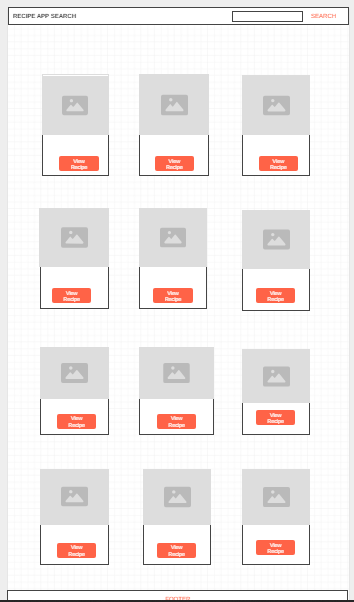

Recipe App - The name reflects the purpose of the site, which is to provide users with a collection of recipes and cooking instructions.
The purpose of the Recipe App is to allow users to search and view various recipes with detailed instructions for preparing dishes. It aims to be a helpful tool for both beginner and experienced cooks.
Primary Color: #212121 — used for header and navigation.
Secondary Color: #ff5c5c — used for recipe titles and buttons.
Font: Arial, sans-serif, used for both headers and body text.
Mobile View: Simple layout with a search bar, recipe grid, and a popup for recipe details.
Desktop View: Expanded layout with a recipe grid and detailed recipe information on the right side.